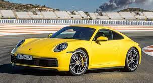

A melhor marca automotiva , criada em 25 de abril de 1931 por Ferdinand Porsche na cidade de Stuttgart na alemanha , logo abaixo esta alguns modelos da marca

utilizando o motor Porsche Boxer de 175 cv, e 6 cilindros, com injeção multiponto, era robusto e muito confiável, com aceleração de 0 a 100 em 7 segundos esse é o porsche 911 1974.
essa é a porsche 911 turbo s